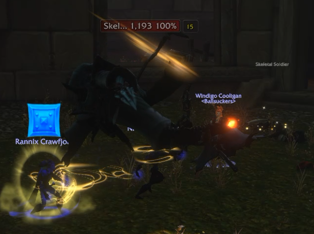

Resumen del Encuentro
El evento aparecera en cuanto entres en la Plaza del Mercado desde el camino que lleva al cementerio cerca de Viktor the Vile La estatua de esta zona activará 3 oleadas de ghouls antes de que aparezca.
A veces hay que matar tambien a un guardia esqueletico cercano para aparezca, seguramente se trate de un bug.

Además que sus ataques básicos provocan una reduccion de la velocidad de ataque, posee un (Drain Life) que puede ser interrumpido mediante un aturdimiento, además de una nova de escarcha que te inmoviliza durante 8s.